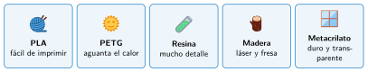
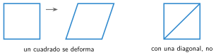

Materiales y estructuras
🤔 Pienso5 min
Qué hago aquí: Piensa un momento y contesta con lo que ya sabes. No pasa nada si no lo sabes: es para empezar.
¿De qué material harías una ventana? ¿Y un martillo? ¿Por qué?
✏️ Puedes responder escribiendo, con un dibujo o un esquema, o contándolo en voz alta.
📖 Leo y aprendo15 min
Qué hago aquí: Lee despacio, mira los dibujos y los ejemplos, y quédate con la idea clave del final.
Para fabricar una pieza hay que elegir bien el material. Cada material se comporta de una forma. Son sus propiedades.
| Material | Cómo es | Máquina |
| PLA | plástico fácil de imprimir; se ablanda con el calor | impresora 3D |
| PETG | plástico más resistente; aguanta más el calor | impresora 3D |
| Resina | líquido que se endurece con luz; piezas con mucho detalle | impresora de resina |
| Madera | ligera y fácil de cortar | láser y fresadora |
| Metacrilato | plástico duro y transparente | láser |

Una estructura es el «esqueleto» de un objeto: las partes que aguantan las fuerzas. Por ejemplo, las patas de una mesa.
El triángulo es la figura más firme: no se deforma. Por eso, para que una estructura sea fuerte, se ponen barras en diagonal. Es la triangulación.

✏️ Hago25 min
Qué hago aquí: Haz las actividades en orden. Empieza siempre por las básicas.
Une cada material con su propiedad.
| una goma | • • | transparente |
| un vaso de cristal | • • | elástica |
| una ventana | • • | frágil |
¿Con qué material del taller harías un cartel transparente?
¿Con qué material harías una figura pequeña con muchos detalles?
Dibuja una estantería que se tambalea. Añade una barra para que no se deforme.
Busca en clase o en el patio dos estructuras con triángulos. ¿Dónde están?
✏️ Puedes responder escribiendo, con un dibujo o un esquema, o contándolo en voz alta.
🚀 Amplío (si quieres saber más)
Qué hago aquí: ¿Has terminado? Lee la curiosidad o elige el reto. Es voluntario.
¿Por qué el relleno de una pieza suele ser del 20 % y no del 100 %? ¿Cuándo pondrías más?
✅ Compruebo5 min
Qué hago aquí: Contesta sin mirar la ficha y marca cómo lo llevas.